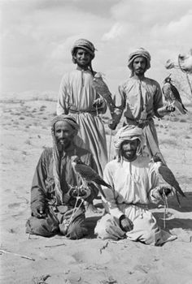
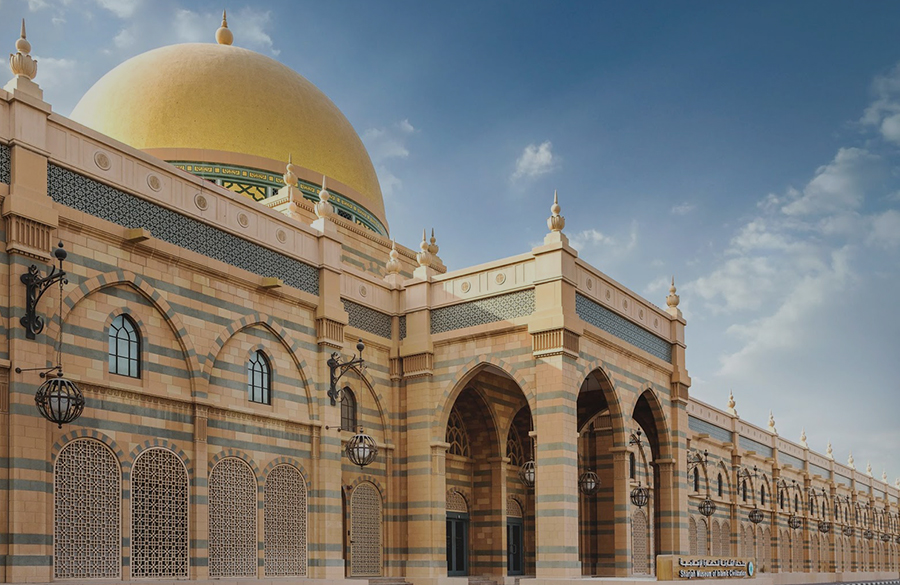
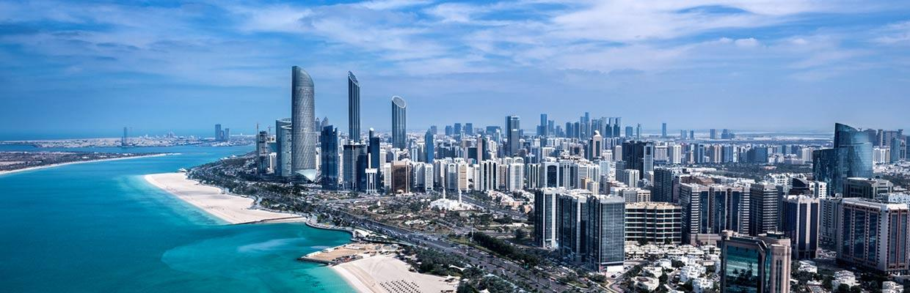

U.A.E
The United Arab Emirates (UAE) is a captivating and dynamic nation located on the eastern coast of the Arabian Peninsula. It boasts a rich history that traces its roots to ancient civilizations and nomadic tribes. Today, the UAE stands as a beacon of modernity, showcasing a unique blend of tradition and innovation. In this essay, we will delve into the history of the UAE, exploring its beginnings, significant traditions, and the celebrations that shape its cultural identity. In this article, we will be talking about the U.A.E's Historical origins, Traditions and Cultural Heritage, and their Celebrations and Festivals.
Historical origins
The most notable event in the UAE's history was its formation on December 2, 1971, when six emirates - Abu Dhabi, Dubai, Sharjah, Umm Al-Quwain, Fujairah, and Ajman - came together to create the United Arab Emirates. Shortly afterward, Ras Al Khaimah joined the union, solidifying the nation's current structure. This union marked the beginning of a new era for the UAE, one marked by economic growth, technological advancement, and modernization.
Continuing from the historical origins of the United Arab Emirates, it is essential to delve deeper into the region's past and its transformation into a modern, united nation.
The pre-oil era of the UAE was marked by a strong sense of community and interdependence. Traditional economies revolved around activities such as fishing, pearl diving, and trade. Pearling, in particular, was a significant source of income for coastal communities. Emiratis were known for their exceptional pearl diving skills, which required courage and endurance to descend to the depths of the Arabian Gulf in search of valuable pearls. This practice not only sustained their livelihoods but also shaped their culture and traditions.
However, the discovery of oil in the 20th century had a profound impact on the UAE's history and development. The nation's oil reserves were among the world's largest, propelling it into a period of unprecedented growth and transformation. The newfound oil wealth provided the financial resources necessary to modernize the country's infrastructure, education, healthcare, and economy. The UAE became a magnet for expatriate workers and foreign investment, transforming it into a global business and trade hub.

Sheikh Zayed bin Sultan Al Nahyan, the founding father of the UAE and the ruler of Abu Dhabi, played a pivotal role in guiding the country through this period of rapid change. His leadership was characterized by a vision of unity, economic development, and a strong commitment to preserving Emirati culture and traditions. Sheikh Zayed's dedication to nation-building, environmental conservation, and social welfare left an enduring legacy, and he is revered as a symbol of unity and progress.
The federation of the UAE in 1971 marked the consolidation of the emirates into a single nation with a shared vision for the future. The union allowed for the pooling of resources and the formulation of a common foreign policy, further enhancing the UAE's international standing.
Today, the UAE's transformation into a modern, prosperous, and cosmopolitan nation is nothing short of remarkable. The skylines of cities like Dubai and Abu Dhabi are adorned with iconic architectural marvels, while the country boasts world-class infrastructure, educational institutions, and healthcare facilities. The UAE has successfully diversified its economy, reducing its dependence on oil, and now flourishes in sectors such as tourism, aviation, finance, and technology.
The United Arab Emirates has a history that traverses from the traditional roots of pearling, trade, and tribal society to the modern era of oil-driven prosperity and global prominence. The nation's history is a testament to the resilience and adaptability of its people, who have successfully merged their cultural heritage with the demands of the contemporary world. As the UAE continues to strive for progress, it remains deeply committed to preserving its traditions and cultural identity while embracing the opportunities of the future.
Traditions and Cultural Heritage
The UAE celebrates a multitude of festivals and events that showcase the nation's traditions and cultural diversity. Some of the most significant celebrations include:
1. Traditional Dress: Emirati men typically wear a long white robe known as a "kandura," while women don the "abaya," a flowing black cloak. These traditional garments are not only practical in the desert climate but also symbolize modesty and cultural identity.

2. Arab Hospitality: Hospitality, or "diwan" in Arabic, is a cornerstone of Emirati culture. Guests are welcomed with open arms, and serving coffee and dates is a time-honored tradition. The act of serving coffee, called "gahwa," reflects the warmth and generosity of the host.
3. Falconry: Falconry holds a special place in Emirati culture. It is both a traditional hunting practice and a symbol of prestige. The annual Abu Dhabi International Hunting and Equestrian Exhibition (ADIHEX) showcases the art of falconry and is a testament to the country's commitment to preserving this tradition.
4. Arabic Calligraphy: The UAE celebrates the art of Arabic calligraphy, a centuries-old tradition. It is often used to decorate buildings, signs, and art pieces, emphasizing the importance of the Arabic language and script.
5. Traditional Music and Dance: Emirati music and dance, such as the "Al Ayyala" and "Al Yowla," are integral to the nation's cultural identity. These traditional performances are celebrated during national events and cultural festivals. The traditions and cultural heritage of the United Arab Emirates are woven into the very fabric of daily life and continue to play a vital role in shaping the nation's identity. These cultural elements reflect the resilience, heritage, and values of the Emirati people, emphasizing the importance of preserving their unique way of life.
Celebrations and Festivals
The UAE celebrates a multitude of festivals and events that showcase the nation's traditions and cultural diversity. Some of the most significant celebrations include:
1. National Day: December 2nd is a day of immense pride and celebration as the UAE commemorates its founding. Festivities include parades, fireworks, cultural exhibitions, and an outpouring of national pride.
2. Eid al-Fitr and Eid al-Adha: These Islamic holidays are celebrated with great fervor in the UAE. Eid al-Fitr marks the end of Ramadan, while Eid al-Adha commemorates the willingness of Ibrahim (Abraham) to sacrifice his son as an act of obedience to God. Families come together, exchange gifts, and share special meals during these festive occasions.

3. Dubai Shopping Festival: A major retail event, the Dubai Shopping Festival offers discounts, entertainment, and cultural exhibitions. It attracts visitors from around the world, turning Dubai into a shopping paradise.
4. Dubai World Expo: In 2020, the UAE hosted the Dubai World Expo, a global event that celebrated culture, innovation, and human achievement. This event showcased the nation's commitment to progress and sustainability.
5 National Day (December 2nd): December 2nd is a momentous day for the UAE as it commemorates the union of the emirates in 1971, which led to the formation of the modern United Arab Emirates. National Day is a time for Emiratis to express their deep sense of patriotism and pride in their nation. Celebrations include parades, firework displays, cultural exhibitions, and a sea of cars adorned with the UAE flag.